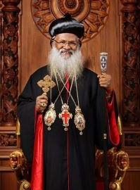

Welcome to the Holy Consecration Celebration!
We are thrilled to invite you to a momentous occasion as we consecrate and dedicate our beloved St. Paul's Orthodox Church on October 6th and 7th, 2023. This sacred event marks a significant milestone in our faith community's journey, and we are excited to share it with you.
About the Holy Consecration:
Holy Consecration is a time-honored tradition where we set apart our place of worship, dedicating it to the divine purpose for which it is built. St. Paul's Orthodox Church has been a beacon of light and a spiritual home for our congregation for several years, and this consecration signifies a recommitment to our faith and the mission of spreading love, compassion, and kindness.
Chief Celebrant:
We are honored to announce that the chief celebrant for this auspicious occasion will be His Holiness Baselios Marthoma Mathews III, who is the supreme head of the Malankara Orthodox Syrian Church, Ninth Catholicos of the East and Malankara Metropolitan, and the 92 nd primate on the Apostolic throne of St. Thomas. Catholicos of the East and Malankara Metropolitan brings his wisdom, guidance, and blessings to our consecration ceremony, enriching our experience with his deep understanding of faith and spirituality.
Co-Celebrants:
H.G. Dr. Thomas Mar Ivanios Metropolitan - Diocese of Southwest America
H.G. Dr. Yuhanon Mar Diascoros Metropolitan - Kottayam Diocese
H. G. Dr. Joshua Mar Nicodimos Metropolitan - Nilackal Diocese
Distinguished Guests:
We are delighted to welcome our esteemed guests to this memorable event.
- Michelle Bishop, District Director for Congressman Keith Self (Member of the U.S. House, representative of the 3rd District of Texas)
- Mayor George Fuller (McKinney)
- Mayor Saji George (Sunnyvale)
- Jeff Price (Assistant Chief Deputy, Collin County Sheriff's Office)
Schedule of Events:
Friday, October 6, 2023
| Time | Event |
|---|---|
| 6:00 PM | Evening prayer and church consecration ceremony (Part I) led by H. H. Baselios Marthoma Mathews III |
| 8:30 PM | Fellowship meeting followed by dinner |
Saturday, October 7, 2023
| Time | Event |
|---|---|
| 7:00 AM | Morning prayer and church consecration ceremony (part II) led by H. H. Baselios Marthoma Mathews III |
| 10:00 AM | Holy Qurbana (Holy Trimass) - Chief celebrant H. H. Baselios Marthoma Mathews III |
| 12:00 Noon | Public meeting followed by lunch |
| 6:30 PM | Evening prayer followed by devotional address by Rev. Fr. Dr. Alexander Kurian |
Sunday, October 8, 2023
| Time | Event |
|---|---|
| 8:30 AM | Morning Prayer and Holy Qurbana (Holy Trimass) Chief celebrant: Very Rev. Fr. Raju Daniel Cor Episcopos |
| 11:30 AM | Lunch |
| 12:30 PM | MGOCSM, Focus, and Youth Meetings: Rev. Fr. Alexander Kurian, Rev. Fr. Shawn Thomas |
Join Us in Celebration:
We extend our warm invitation to all members of our congregation, our community, and guests from near and far to come together in celebration. This consecration is not only a time to honor our past but also to look forward to the future with hope and inspiration.
Church Address.
5088 Baxter Well Rd
McKinney, TX 75071
We are conveniently located near Highway 75 and US-380.
If you have any questions or need further information, please don't hesitate to reach out. We eagerly anticipate your presence at the consecration of St. Paul's Orthodox Church as we embark on a renewed journey of faith, unity, and purpose under the guidance of our esteemed chief celebrant, H. H. Baselios Marthoma Mathews III. Let us come together in gratitude and reverence as we consecrate this sacred space.
Yours in Christ,
Very Rev Fr. Raju Daniel Cor-Episcopos Vicar
Email: vicaratstpaulsoc@gmail.com
Phone: (214) 476-6584